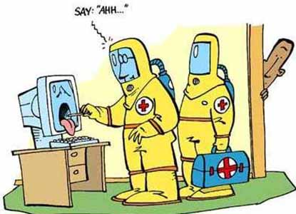

Learn more here.
The Five Virus Types
| File infector Viruses |
|---|
| Will infect executable files and will run in the background of an infected system. |
| Boot Sector Viruses |
| Will run when the infected computer is turned on. Once executed they will corrupt the boot sector of a computer and make the computer unbootable. |
| Master Boot Record Viruses |
| They are similar to boot sector viruses in the result of not being bootable. MBR viruses will change where the Master Boot Record is in the file system. |
| Multipartite Viruses |
| Will infect boot records and program files by corrupting the sector on the disk. Will reinfect anything saved on the area previously infected. |
| Macro Viruses |
| Infects data files and spreads once executed. Macro viruses are the most common type of virus. |
Learn more here.